Dios, Color, Arte, Vida: La Historia del Círculo Cromático y la Teoría del Color
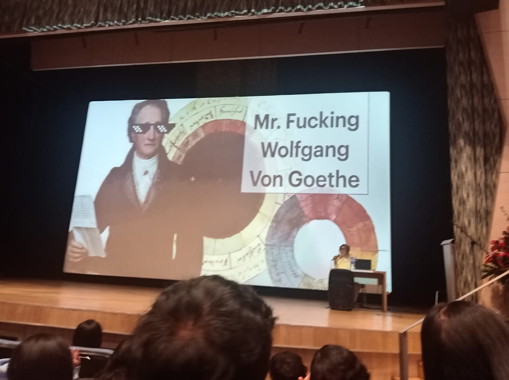
Aproximación didáctica y humorística sobre el pensador alemán. Introduce las bases de su "Teoría de los Colores" (1810), donde rebatió la perspectiva puramente matemática de Newton para centrarse en la experiencia humana, la subjetividad y los aspectos psicológicos de la percepción visual.
Goethe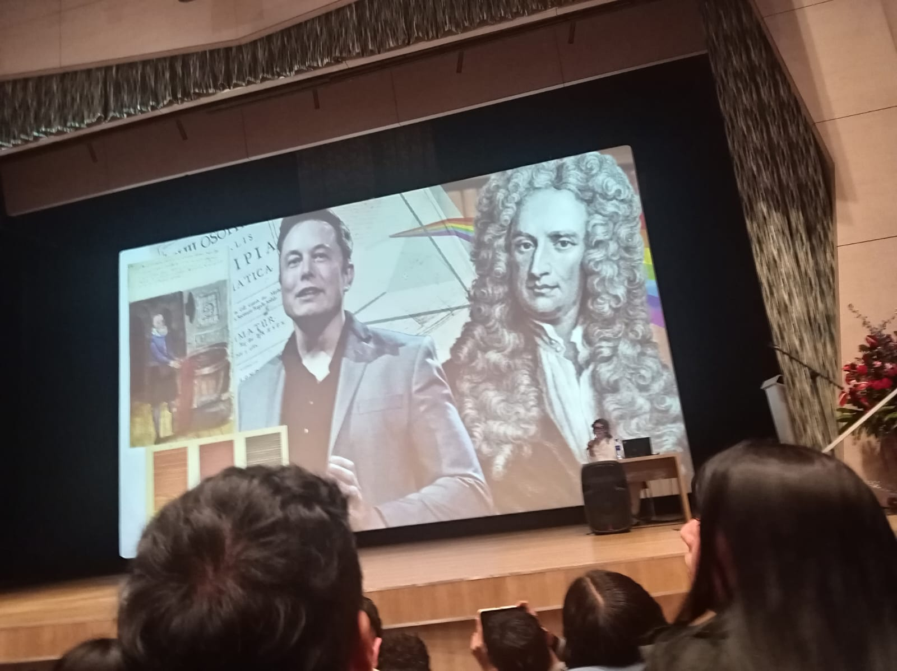
Paralelo histórico entre la naturaleza rupturista de Sir Isaac Newton en el siglo XVII y las mentes tecnológicas contemporáneas. Se destaca cómo la publicación de su tratado "Opticks" marcó un antes y un después en la comprensión de la luz como un fenómeno físico analizable.
Newton & Óptica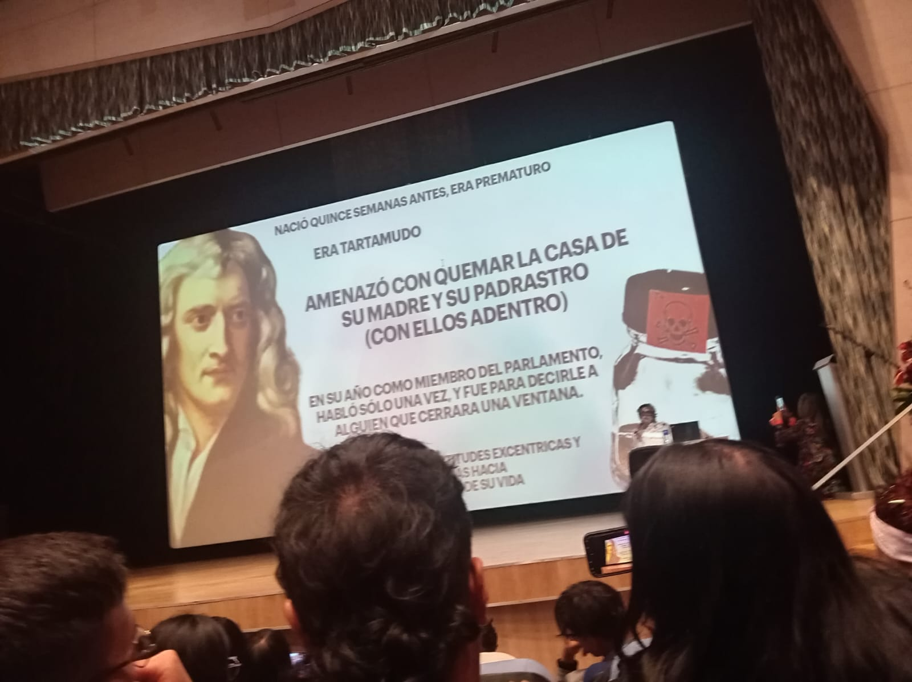
Revisión biográfica que rompe el mito estricto del científico: su origen prematuro en Woolsthorpe, sus marcados problemas de tartamudez, el complejo temperamento resentido hacia sus padres y su curiosa apatía legislativa en su paso por el parlamento.
Biografía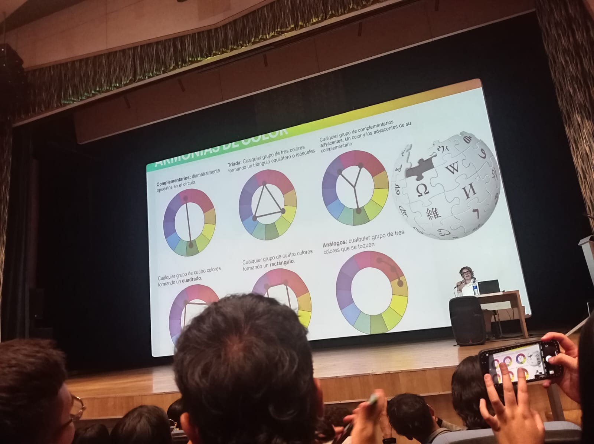
Análisis de los esquemas estructurales modernos inspirados en las geometrías de la luz. Explicación técnica de la relación espacial entre colores complementarios directos, tríadas equidistantes, colores análogos colindantes y tétradas o dobles complementarios.
Teoría del Color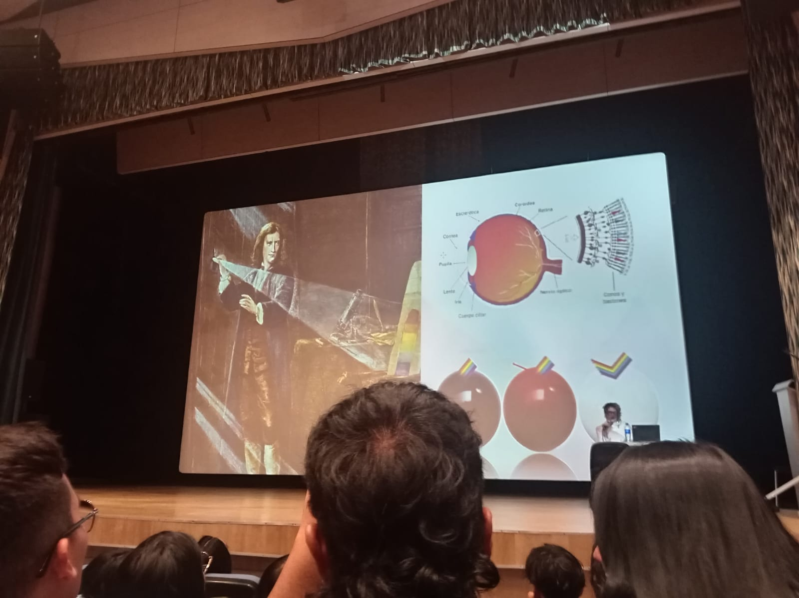
Estudio analítico que conecta la física ondulatoria con la biología. Muestra el experimento clásico del prisma refractando la luz blanca en el espectro visible, vinculándolo directamente con el funcionamiento de las células fotorreceptoras de la retina: los conos y los bastones.
Biología y Física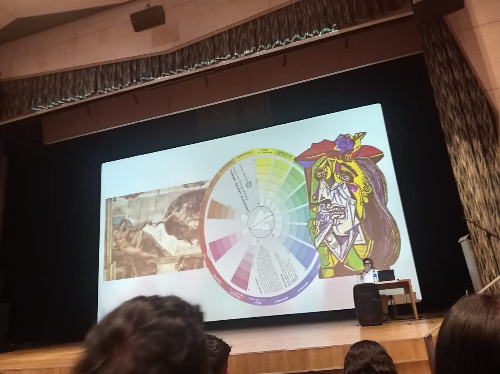
La rueda cromática dispuesta como eje evolutivo en la historia del arte. Muestra cómo la rigidez compositiva y las reglas del color clásico del Alto Renacimiento sirvieron como cimiento técnico para las posteriores rupturas estéticas y geométricas de las vanguardias del cubismo.
Historia del Arte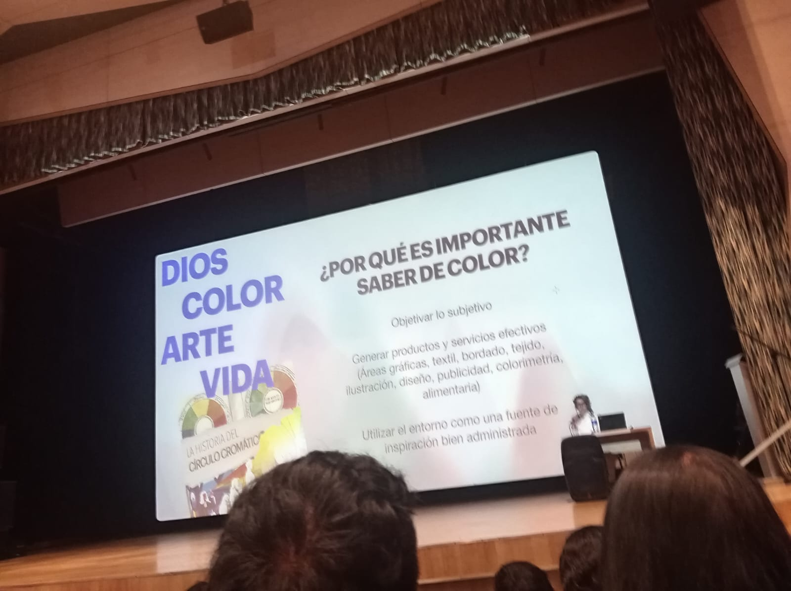
Justificación de la colorimetría en el entorno comercial moderno. Se debate la complejidad de transformar las sensaciones abstractas en códigos estandarizados para garantizar la consistencia en el diseño textil de modas, la industria del empaque gráfico y la identidad corporativa.
Aplicación Práctica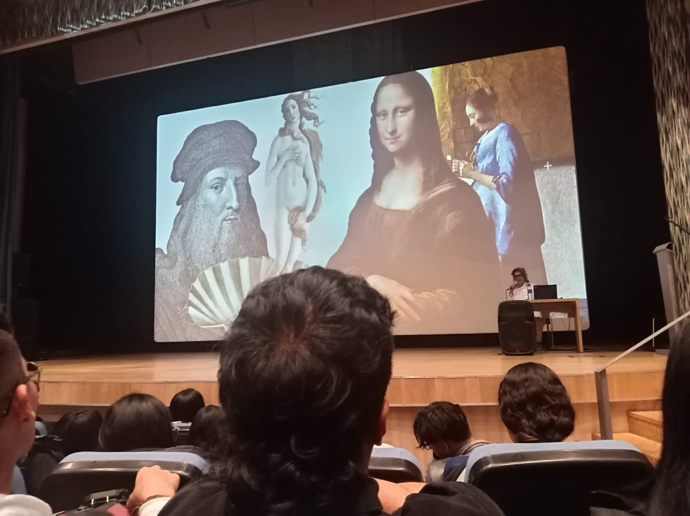
Revisión de las atmósferas y volúmenes logrados por los grandes maestros italianos. Se destaca el uso del claroscuro y la iluminación mística aplicados de forma magistral en los rostros y ropajes de las obras icónicas de Leonardo da Vinci y Sandro Botticelli.
Renacimiento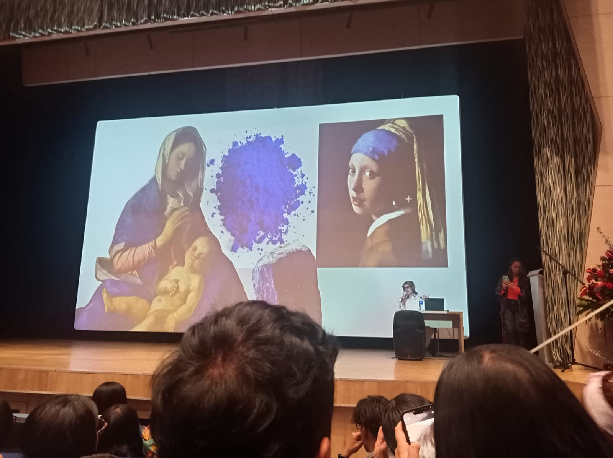
Explicación del estatus y misticismo del azul ultramar auténtico, molido a partir de piedras semipreciosas de Lapislázuli importadas de Afganistán. Su costo histórico, superior al del oro, restringía su uso exclusivo a mantos sagrados y lienzos selectos de genios como Johannes Vermeer.
Pigmentos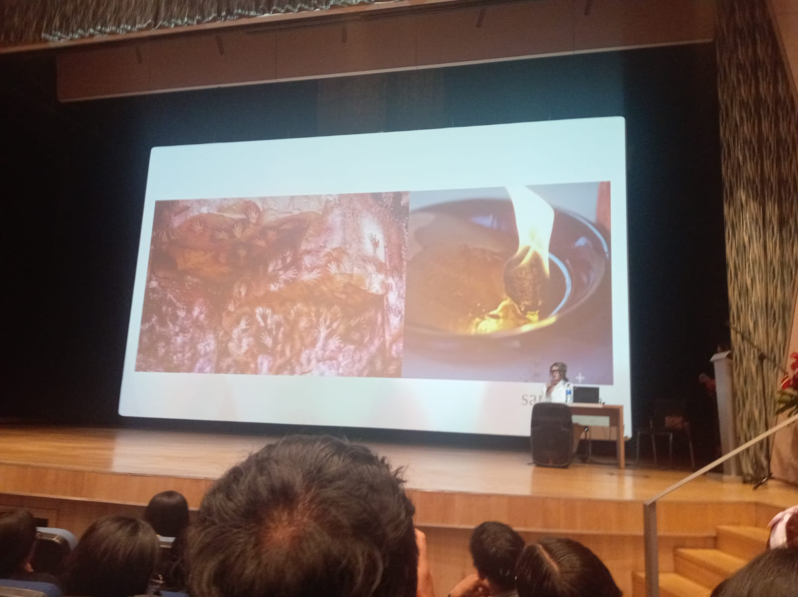
Regreso a las raíces de la expresión humana a través de la pintura rupestre. Se analiza el uso de óxidos de hierro, arcillas, grasas animales y carbón vegetal empleados en las cuevas paleolíticas para plasmar escenas de caza con los primeros pigmentos estables.
Prehistoria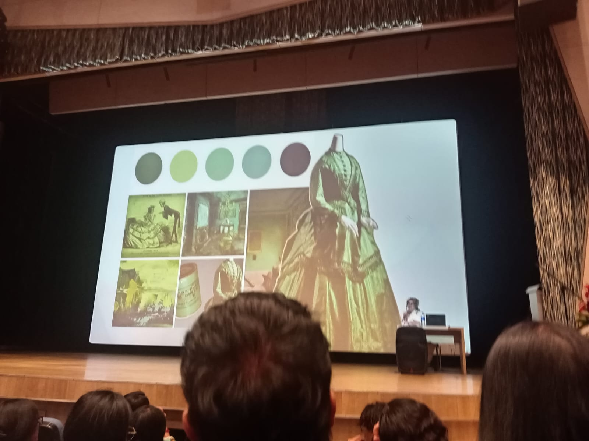
Estudio cronológico sobre la indumentaria de época y las paletas cromáticas asociadas a hitos específicos de la moda. Explora cómo el desarrollo técnico textil influyó en la selección de tonos iconográficos para definir jerarquías y estéticas sociales.
Moda e Historia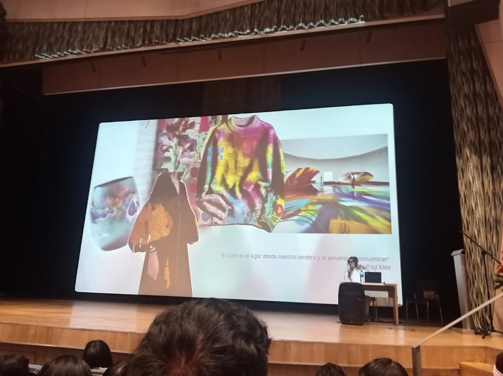
Espacio de conceptualización y debate estético bajo la célebre cita reflexiva del pintor Paul Klee: "El color es el lugar donde nuestro cerebro y el universo se encuentran". Se analiza la estrecha línea divisoria entre el estímulo físico externo y la interpretación mental abstracta.
Teoría Estética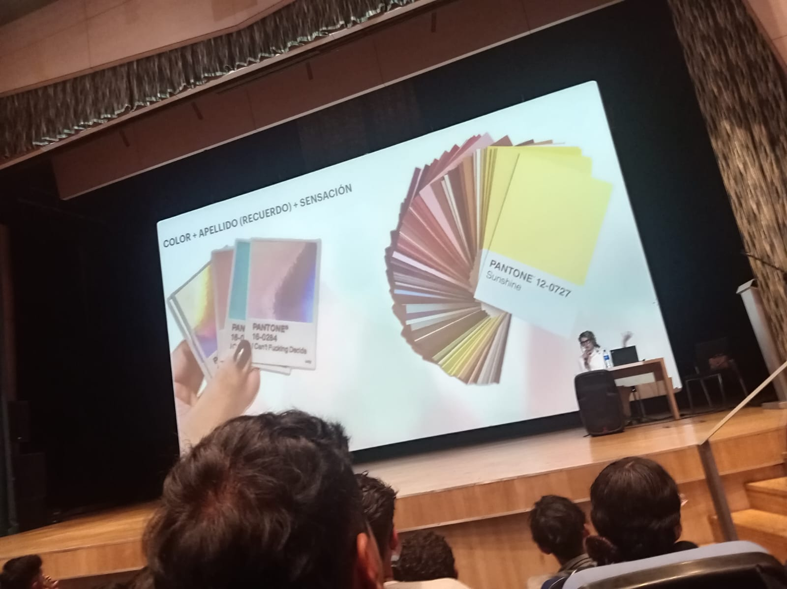
Uso industrial y estandarización del color por medio de guías normalizadas de alta fidelidad (Pantone). Se describe el proceso técnico y la importancia de unificar criterios numéricos para vincular de manera precisa la memoria visual, la producción y las sensaciones.
Colorimetría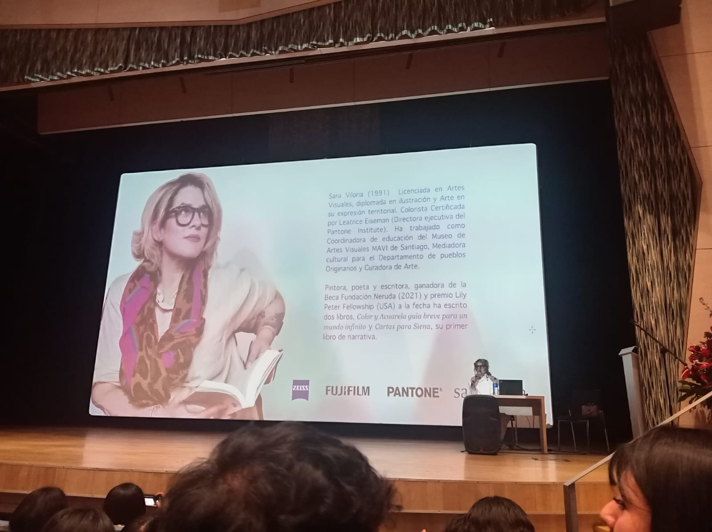
Cierre y sección de conclusiones de la jornada académica a cargo de la Licenciada en Artes Visuales y Colorista Certificada, quien recopila las enseñanzas clave para tender puentes entre la historia cromática clásica y el diseño contemporáneo.
Conclusión